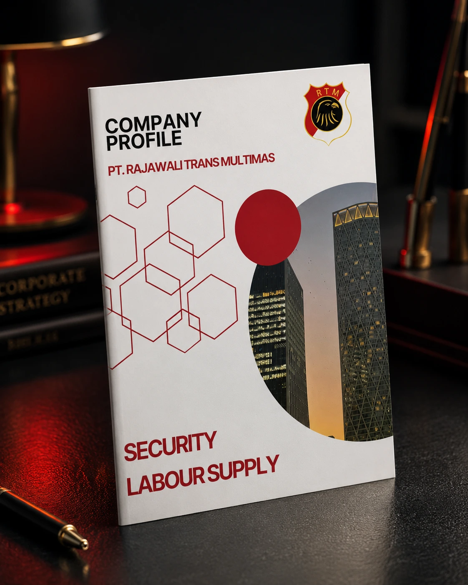
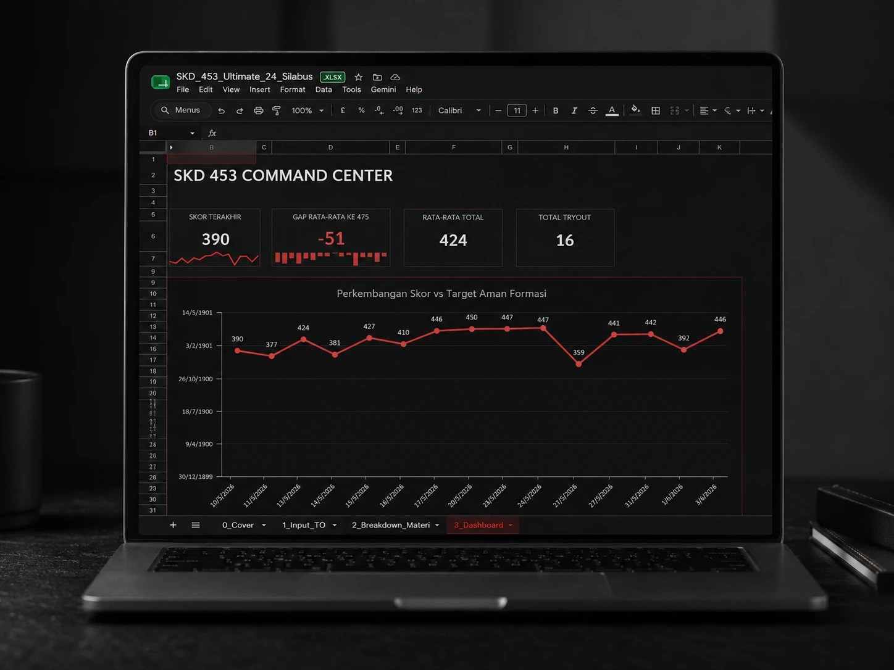
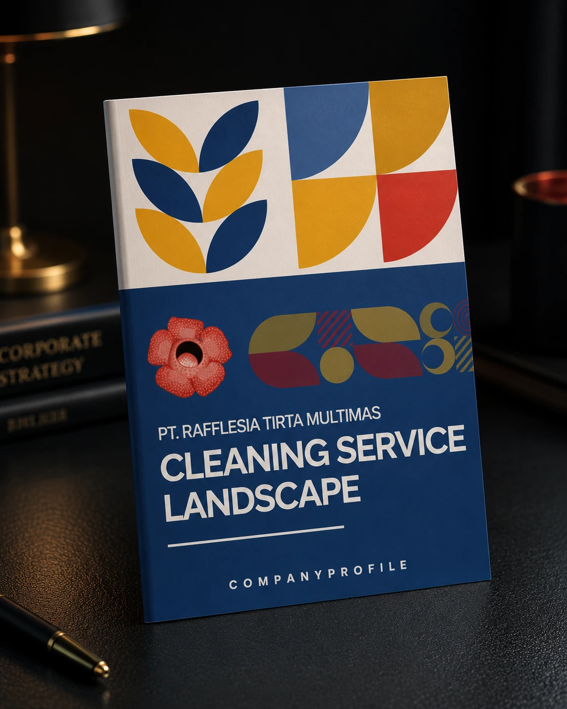
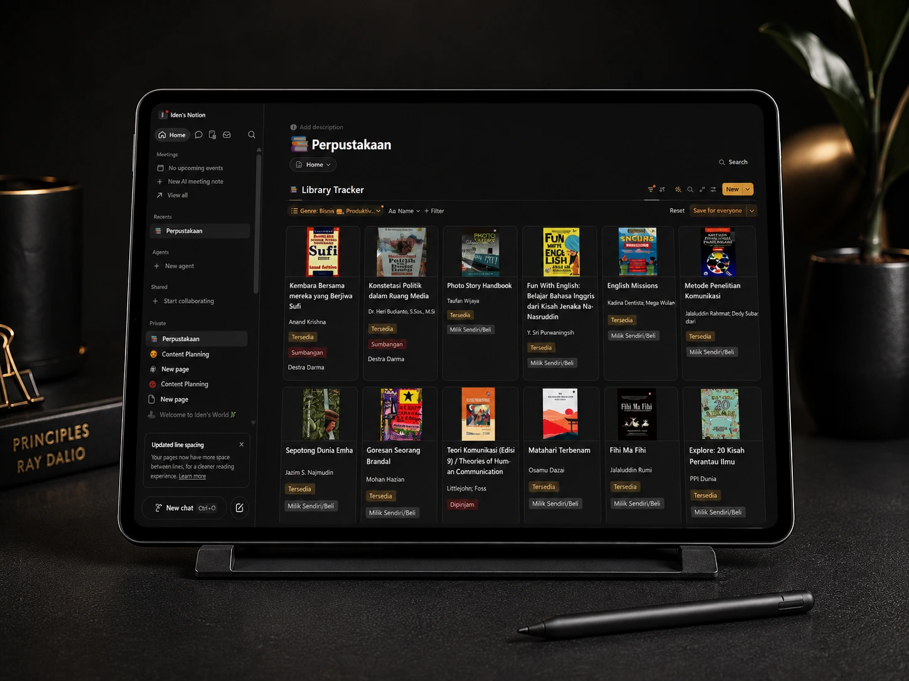

YouTube views during my Ratu Mimis tenure
Communication Science graduate · Cianjur, Indonesia
I LEARN. I MAKE. I ORGANIZE.
I am a fresh graduate with hands-on experience across content, visual communication, data, and operational support. I enjoy turning information into clearer materials and more organized ways of working.

IDEN RIDWAN MULYANACommunication Science Graduate
BASED INCianjur, Indonesia
Communication
Visuals
Data
Operations
CONTENT · VISUAL COMMUNICATION · DATA VISUALIZATION · DIGITAL MARKETING · OPERATIONAL SUPPORT ·
Selected evidence
Content assets monitored and evaluated
Syllabus areas mapped in SKD Command Center
GPA · Cum Laude
01 / Selected work
Projects that show
how I work.
Rajawali leads the visual sequence. Every project stays available, while only projects with existing images receive full visual treatment.

01 / EDITORIAL COMMUNICATION
PT. Rajawali Trans Multimas
Making a complex service business easier to understand.
I designed and structured a company profile for a security and labour-supply business, focusing on clearer information hierarchy, service presentation, and professional visual consistency.
Information hierarchyEditorial designCompany profile
Context
A company profile for a service business operating across security and labour supply.
Contribution
Content structure, visual hierarchy, page composition, and final company-profile design.
Learning
Complex service information becomes more persuasive when readers can understand the offer before they are asked to trust it.

02 / DATA & WORKFLOW
SKD Command Center
A study tracker that became useful beyond its original purpose.
I built a spreadsheet-based system to map 24 syllabus areas and monitor study progress. After I shared it on Threads, it received positive responses and several people asked for the file, which I shared with them.
24 syllabus areasCommunity responseShared resource
Need
A practical view of study targets, progress, and priorities in one place.
Response
The system was shared publicly on Threads and attracted positive feedback plus requests for access.
Learning
A personal tool can become a useful public resource when its structure solves a problem other people recognize.

03 / EDITORIAL DESIGN
PT. Rafflesia Tirta Multimas
Organizing service information into a clearer editorial flow.
A company-profile project for cleaning service and landscape operations. The visual direction gives service categories, company information, and supporting material a consistent reading order.
Editorial layoutService communicationPrint-ready
Difference
Unlike Rajawali’s security and labour-supply focus, this project organizes multiple cleaning and landscape services into a more modular editorial system.
Contribution
Layout development, visual consistency, and presentation of service information.
Learning
Similar formats still require different information rhythms when the business model and service categories change.

04 / KNOWLEDGE SYSTEM
PKM System
A practical system for keeping references useful, not merely stored.
I developed a Notion-based personal knowledge management system to organize references, library items, and learning materials into a searchable and trackable structure.
Notion databaseKnowledge workflowPersonal project
Problem
References are easy to collect but difficult to retrieve and use consistently.
Contribution
Database structure, categories, tracking fields, and retrieval workflow.
Learning
A useful knowledge system is designed around future use, not the act of saving information.
02 / Project archive
Every project
still counts.
Projects without dedicated images remain accessible as text-led entries.
03 / Theory, research & practice
LEARNINGDIDN’T STOPIN CLASS.
My college years connected academic foundations with practical experience. Communication Science helped me understand audiences and messages, research trained me to examine evidence, and organizations gave me space to practice coordination and documentation.
Understanding audiences, messages, and media.
Studying Communication Science at Universitas Putra Indonesia introduced me to audience behavior, media, communication research, and digital communication. It taught me to look beyond how content appears and consider who it is for, why it may work, and what response it may create.
Bachelor of Communication Science · Graduated 2025 · Cum Laude · GPA 3.69/4.00Studying how educational content relates to purchasing decisions.
My final research examined the influence of educational content on purchasing decisions for @bukuakik products. The process strengthened my interest in audience behavior, content effectiveness, consumer decisions, and the use of data to support communication choices.
Thesis: “The Influence of Educational Content on Purchasing Decisions for @bukuakik Products.”Practicing communication through organizations.
Outside the classroom, organizational work gave me opportunities to practice internal communication, publication, meeting coordination, documentation, and administration. I learned that clear communication also means helping people understand responsibilities, decisions, and next steps.
04 / Organization & leadership
LEARNING TO WORK WITH PEOPLE.
Organizational roles gave me practical space to learn coordination, publication, documentation, and administration while working with people who had different responsibilities.
Vice Chair
Ruang Seni dan Sastra
Helped coordinate cross-division activities, facilitated more than 10 internal meetings, supported communication between members, and followed up on agreed programs.
- Coordination
- Communication
- Teamwork
Head of Communication Division
Ruang Seni dan Sastra
Worked on communication planning, more than 30 social-media contents, documentation, and publication support for webinars, workshops, and organizational activities.
- Content
- Publication
- Documentation
Presidium I & Secretary
Himpunan Mahasiswa Islam (HMI)
Gained practical experience in formal meeting procedures, correspondence, documentation, organizational administration, and recording decisions clearly.
- Governance
- Administration
- Record-keeping
04 / Professional journey
Early experience.
Real contribution.
A fresh graduate portfolio should show evidence without pretending to be senior. These are the roles where I learned by doing.
Economic Census Partner
Badan Pusat Statistik · Cianjur
Conducting business-unit data collection, verification, questionnaire completion, progress reporting, and field coordination. Reached 44% of the assigned area target while maintaining reporting accuracy.
Content & Operations Lead
Ratu Mimis · Purwokerto
Worked on digital content activities during a 90-day period in which the channel reached 1,017,208 views, grew 340%, and gained 1,444 subscribers. I also contributed to product commercialization, from packaging design to digital sales distribution.
Freelance Writer & Editor
Self-employed · Cianjur
Writing and editing formal documents for multiple clients while managing quality and deadlines across concurrent projects.
Freelance Graphic Designer
Self-employed · Cianjur
Completed more than five branding projects—including logos, catalogues, and company profiles—for clients across different industries.
Communication Intern
Diskominfo Cianjur
Monitored and evaluated more than 200 cross-platform content assets and reviewed sentiment around more than 50 public issues to support communication reporting and recommendations.
05 / What I can support
FOUR MODES.
ONE CURIOUS MIND.
Content & Communication
Content planning, social media support, message structure, and formal writing.
Visual Materials
Company profiles, catalogues, branding assets, thumbnails, and editorial layouts.
Data & Reporting
Excel, data visualization, performance monitoring, evaluation, and reporting support.
Operational Support
Trackers, databases, documentation, project administration, and workflow organization.
Open to entry-level roles, projects, and conversations
Let’s build the
next learning curve.
I am looking for opportunities where I can contribute practical communication, content, data, and operational skills while continuing to learn from a professional team.